Gordon James Ramsay OBE is a British chef, restaurateur, television personality and writer. He was born in Johnstone, Scotland, and raised in Stratford-upon-Avon, England. Ramsay founded his global restaurant group, Gordon Ramsay Restaurants, in 1997. It has been awarded 16 Michelin stars in total and currently holds a total of seven. After rising to fame on the British television miniseries Boiling Point in 1999, Ramsay had become one of the best-known and most influential chefs in the UK by 2004.
Gordon Ramsay
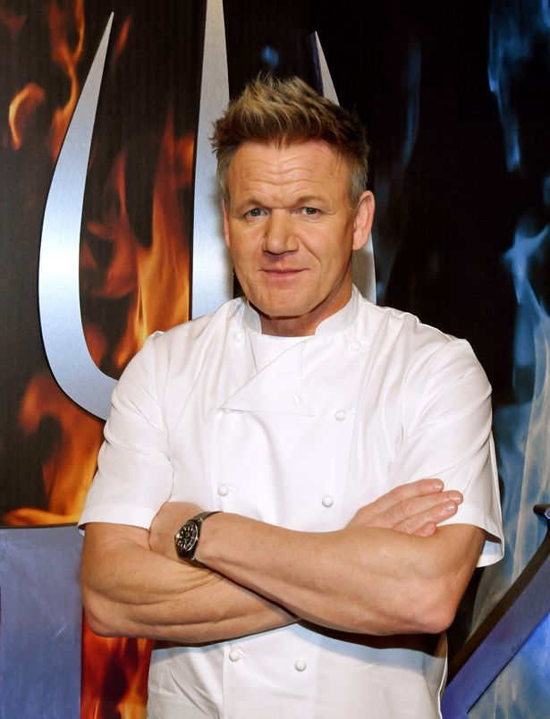
International Chef and Restaurateur
"From an early age I understood that cooking was never going to be a job, it's a passion."
Highlights
- Born
- Spouse
- Children
- Website
- Cooking Styles
8 November 1966 (age 54) in Johnstone, Renfrewshire, Scotland
Cayetana Hutcheson (m. 1996)
5
www.gordonramsay.com
French, Italian, British
Gallery
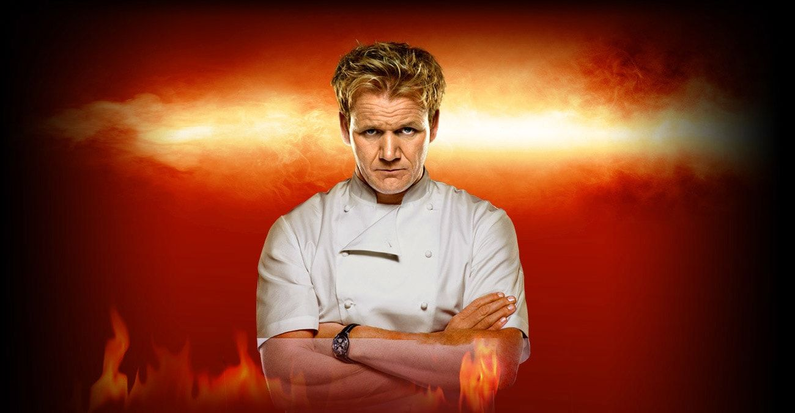
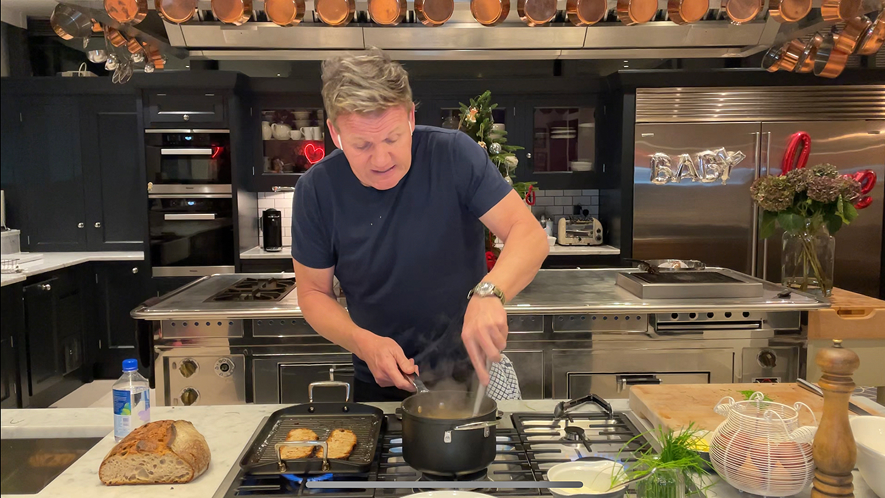
 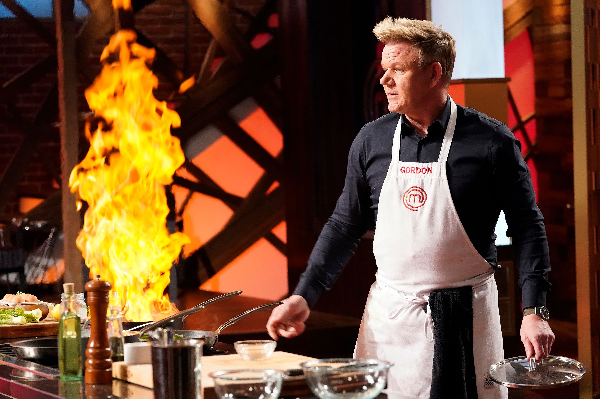
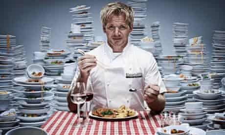
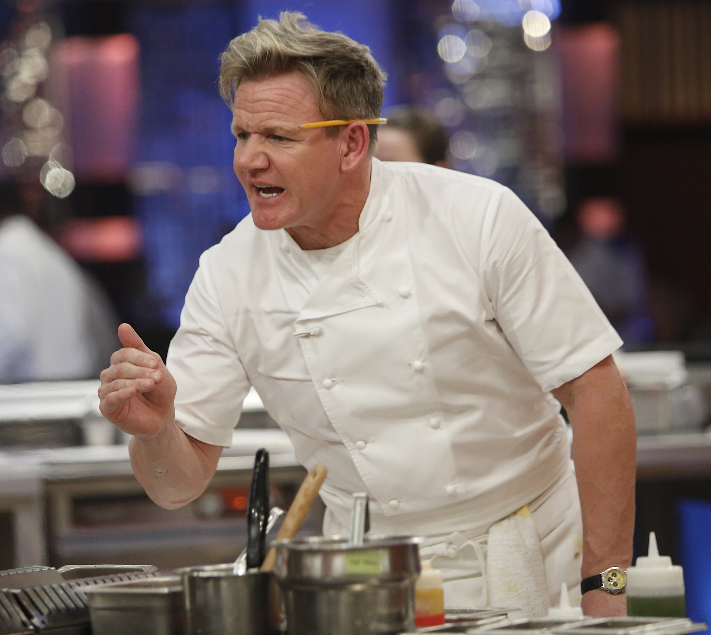
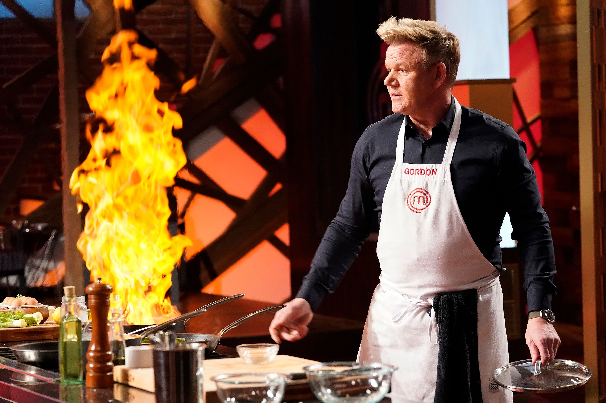
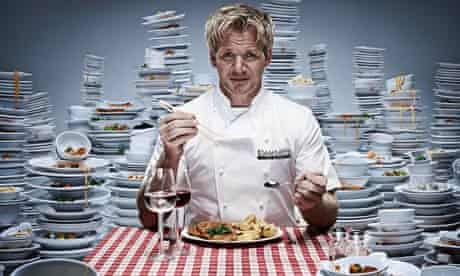
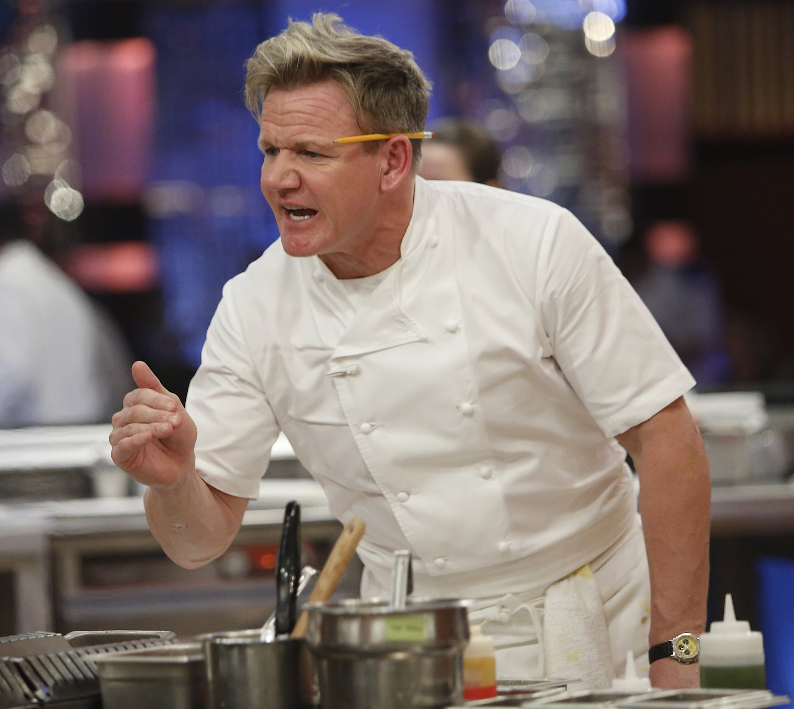
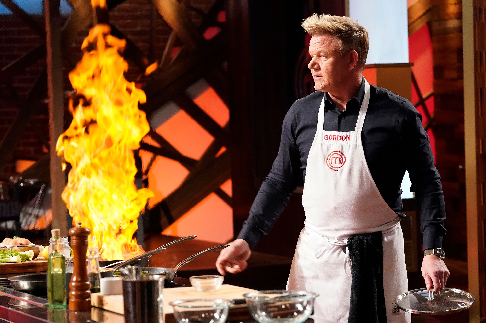
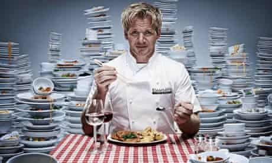
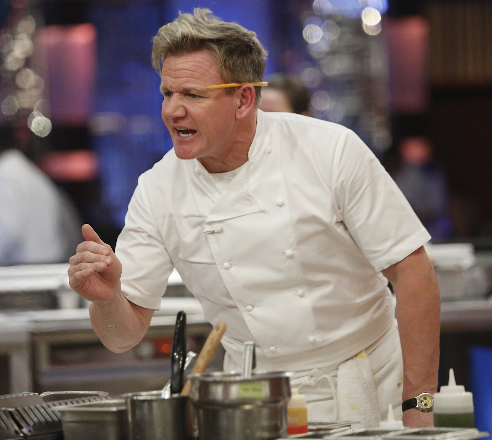
About
As a reality television personality, Ramsay is known for his bluntness, as well as fiery temper, strict demeanour, and frequent use of profanity. He combines activities in the television, film, hospitality, and food industries and has promoted and hired various chefs who have apprenticed under his wing. Ramsay is known for presenting TV programmes about competitive cookery and food, such as the British series Hell's Kitchen (2004), Ramsay's Kitchen Nightmares (2004–2009) and The F Word (2005–2010), the latter winning the BAFTA for Best Feature at the 2005 British Academy Television Awards, and the American versions of Hell's Kitchen (2005–present), Kitchen Nightmares (2007–2014), MasterChef (2010–present), MasterChef Junior (2013–present), as well as Hotel Hell (2012–2016), Gordon Behind Bars (2012), and 24 Hours to Hell and Back (2018–present).
Life Story
Gordon Ramsay is known as the bete noir of the cooking world, a foul mouthed perfectionist who doesn’t suffer fools gladly - as famously recorded in his treatment of celebrities and chefs in the hugely successful TV shows ‘Hell’s Kitchen’ and ‘Ramsay’s Kitchen Nightmares’.
As a youngster he took up professional football with the Glasgow Rangers in 1981, but unexpectedly hung up his boots after a leg injury. Football’s loss was the culinary world’s gain when Gordon decided on a career in catering enrolling with an HND course in hotel management. Five years later Gordon joined the famous Maxim’s restaurant in London as Chef de partie, eventually followed by a year at ‘Harvey’s’ Marco Pierre White’s south London restaurant. Still only in his twenties, Gordon moved to Le Gavroche to work alongside the eminent Albert Roux.
The master chef in the making soon realised he needed first hand experience of the intricacies of classic French cooking. In 1990 he moved to France where he spent three years in the kitchens of Guy Savoy and Joel Robuchon. Gordon then took a year off to cook on the yacht of a media tycoon. A year later, he was back in London as chef of the newly opened Aubergine. Within three years of opening he garnered two Michelin stars and several accolades. 1995 saw Gordon win 'Newcomer of the Year' at the prestigious Catey Awards. It was perhaps inevitable that the chef with a reputation for excellence and a volatile temper would soon be setting up his own establishment. In 1998, following the publication of his first book ‘Passion for Flavour’, he opened Gordon Ramsay in London’s chic Chelsea. He was still only 32.
Gordon’s first taste of TV exposure was on Channel Four’s controversial ‘Boiling Point’, a forbearer of the later reality TV shows ‘Hell’s Kitchen’ which would make him a household name. A year later, Gordon opened Pétrus with his protégé Marcus Wareing as Chef Patron, in London's St. James's Street. This collaboration saw Gordon earning a Michelin star. The wave of acclaim and success continued and in October 2001, Gordon opened 'Gordon Ramsay' in Claridge's. The restaurant’s reputation for excellence gained a Michelin star in 2003. 1999 saw the publication of Gordon’s second book ‘Passion for Seafood’. 2000 witnessed a watershed for the now popular and media savvy chef. Gordon not only won Chef of the Year award at the Cateys 2000, but his restaurant was also voted the Top Restaurant in the UK. As if that wasn’t enough, it was also named as the best Fine Dining Restaurant in the 2001 Harden’s Guide. Not bad for a lad who started out on an HND management course. A third book, ‘Chef for all Seasons’, was shortly followed by ‘Beyond Boiling Point’ a sequel to C4’s original documentary.
In 2001, Gordon won his third Michelin star in the Great Britain & Ireland Red Guide. However, the opening of Amaryllis in Glasgow wasn't such a success and having won a Michelin star, the restaurant eventually closed. During this time, the Gordon Ramsay Scholar Award was launched with the aim of encouraging young chefs. That same year Gordon also opened ‘Verre’ in Dubai. By 2003 Gordon's award-winning food was now being served in another famous London hotel, The Savoy, but it was Ramsay’s hugely successful reality TV shows that was to bring him into the public spotlight.
In what became ‘water cooler’ television, ‘Ramsey’s Hell’s Kitchen’ saw the volatile chef give a variety of micro-celebrities a memorable tongue-lashing, notably former Conservative MP Edwina Curry and Coronation Street actress Amanda Barrie, who was actually moved to hit him after provocation. Ramsey branded the celebrity chefs a ‘bunch of whingers’ and complained to the press that most of the stars ‘hadn’t done a day’s work in their lives’ Gordon also enjoyed huge success in America with the television show Hell's Kitchen USA. The American public loved him and in 2006, he took the Ramsay empire to America where he opened Gordon Ramsay at the London in New York.
The same year saw him gain further recognition with an OBE "for services to the hospitality industry" as well as receive the Catey award for 'Independent Restaurateur of the Year'. The latter was an addition to his 1995 Catey gong for 'Newcomer of the Year' and 2000's 'Chef of the Year', which made him only the third person to have won three Catey awards.
Ramsay's success has been achieved through Gordon Ramsay Holdings Limited, a company run in partnership with his father-in-law Chris Hutcheson, which takes care of all his restaurants, media and consultancy work. However, the chef, who is majority shareholder in the firm, fired his partner in 2010, sparking a public row that threatened to tear the family apart. Unhappy with his dismissal over alleged misuse of company funds, Chris and Greta Hutcheson severed their ties with Ramsay and wife Tana, prompting the chef to write an open letter asking his mother in-law to rescind the decision for the sake of the family. The row came at a time when Ramsay's restaurants were facing pressure as a result of the global financial downturn.
Gordon lives with his wife Tana and children in South London. He regularly jogs home from work late at night after a long shift in his central London restaurants.